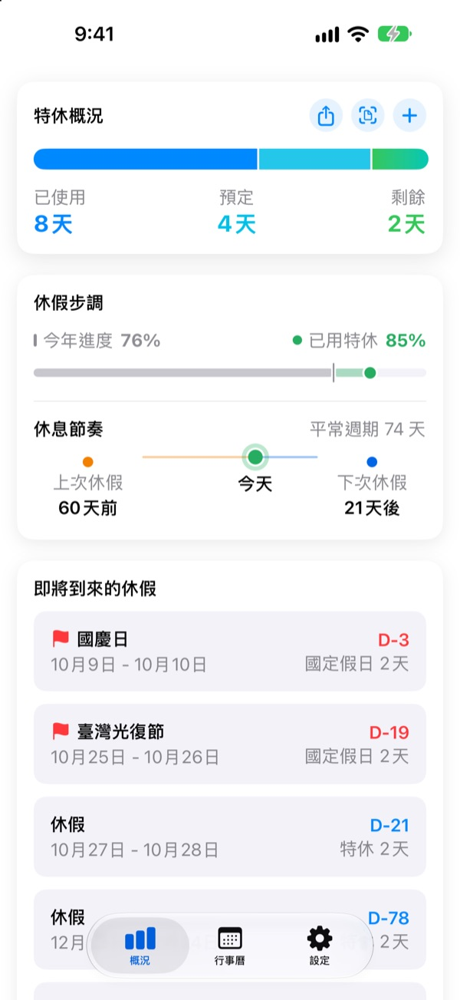
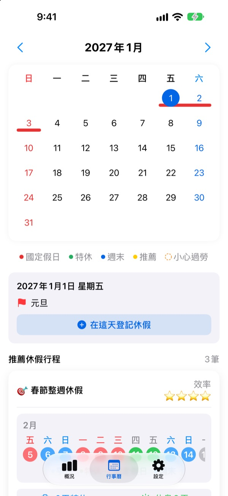

少請幾天假，
多放好幾天
Goldweek 把國定假日和週末組合起來，直接告訴你哪幾天請特休可以連休最久。不用再一頁頁翻行事曆數日子。
免費下載，記錄特休和查看推薦一直免費。
請幾天特休，能放幾天？
選擇你能請的特休天數，我們從接下來的國定假日中，找出用這些天數能休最久的連假。
翻著行事曆算特休，算累了嗎？
週四放假，週五要不要請一天？還是留著跟下個月的連假接起來？翻來翻去，最後隨便挑一天請，到了年底剩下的特休就這樣沒了。Goldweek 幫你算好，先把同樣的特休能放更久的日子擺在你眼前。
剩餘特休一眼看清
總特休、已用、剩餘，一個畫面全看得到。還會把今年過了多少和特休用了多少並排顯示，存太多一看就知道。
不必打開 App，主畫面小工具就能看到剩餘特休和接下來的假期。

直接在行事曆上登記
國定假日、特休和推薦連假都會用不同顏色標在行事曆上。點一下日期就能新增或修改假期，半天、四分之一天和按小時請假也能記。
還能拍下公司請假紀錄畫面，一次匯入過去的紀錄。

照你的國家和上班方式
收錄臺灣、日本、韓國、美國、歐洲、南美、大洋洲等 42 個國家的假日。各州或地區假日不同的國家可選自己的地區，清單上沒有的國家也能自己加入假日。
週末是哪幾天、一週從哪天開始，固定班、兼職、輪班也都能設定。
三個步驟就能開始
- 1
告訴它你在哪裡上班
第一次開啟時，選好國家和每年的特休天數就可以了。
- 2
挑一個推薦
在行事曆標籤頁的推薦休假中，把喜歡的連假加入行程。
- 3
記下請過的假
點日期登記，或用請假紀錄照片一次匯入。
這樣計算
- 全天
- 扣 1 天
- 半天
- 扣 0.5 天
- 四分之一天
- 扣 0.25 天
- 按小時
- 依當天的工作時數換算
- 病假、公假、出差
- 不從剩餘特休中扣除
- 獎勵特休
- 補休、獎勵假這類額外假期，附有效期限另外管理（Pro）
每年的特休天數和特休年度開始的月份，隨時可以在設定裡修改。
好好休息免費，交給它規劃再付費
免費
- 全天、半天、四分之一天、按小時紀錄與剩餘特休
- 42 個國家的假日，自訂假日和寒暑假
- 查看今年所有推薦，其中 3 個可加入行程
- 休息間隔提醒、通知和主畫面小工具
- 用照片登記休假
- iCloud 備份，與家人共享行程
Plus 與 Pro
- Plus：最佳年度休假規劃
- Plus：推薦無限加入，查看去年和明年的推薦
- Plus：匯出到行事曆 App
- Pro：包含 Plus 全部功能，加上獎勵特休、各類型年度上限與遞延
- Pro：匯入學校行事曆、自動偵測行事曆
- Pro：全家一起休、家庭紀念日
每一種方案都可選擇年訂閱，或一次買斷終身使用。
年訂閱若未在期滿前 24 小時關閉，會自動續訂。可隨時在設定 > Apple 帳號 > 訂閱項目中管理。
常見問題
特休好像算得不對。
請在設定裡確認特休年度開始的月份和每年的特休天數。半天（0.5 天）和四分之一天（0.25 天）會自動扣除，病假、公假、出差這類不扣特休的類型不會影響剩餘天數。如果還是不對，請寄信告訴我們。
行事曆上看不到我的假。
已取消的假不會顯示在行事曆上。請在特休管理畫面確認那筆紀錄的狀態。更新到最新版本有時也能解決。
獎勵特休怎麼登記？
在概況標籤頁點 + 開啟特休管理，再從下方的獎勵特休新增。選擇類型（補休、獎勵假、充電假等），輸入天數和有效期限（選填）即可。獎勵特休與一般特休分開管理。
已經購買，功能卻沒有解鎖。
請點設定標籤頁下方的「回復購買項目」。會以 App Store 目前登入的 Apple 帳號回復購買紀錄。如果仍然不行，請寄信聯絡我們。
刪除 App 資料會不見嗎？
資料存在裝置上，刪除 App 後就會全部清除。打開 iCloud 備份，就能留一份日後可以回復的副本。
可以自己新增或隱藏假日嗎？
可以。在設定的國定假日與寒暑假中，可以新增自己的假日，也能隱藏預設的假日。
支援哪些國家？
收錄 42 個國家的假日。在設定選好國家（各州或地區假日不同的國家可選到地區），行事曆會立刻更新。清單上沒有的國家，可以自己加入假日，或從 App 傳送意見請我們支援。
我的紀錄存在哪裡？
你輸入的內容只會存在裝置和你自己的 iCloud。開發者只會收到匿名使用統計、匿名錯誤診斷，以及你主動傳送的意見回饋。
以上無法解決的問題、功能建議或錯誤回報，請寄到 leeo@kakao.com。我們通常會在 1 到 2 個工作天內回覆。